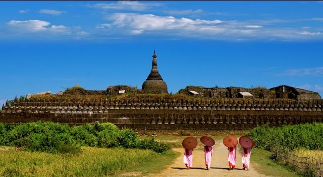
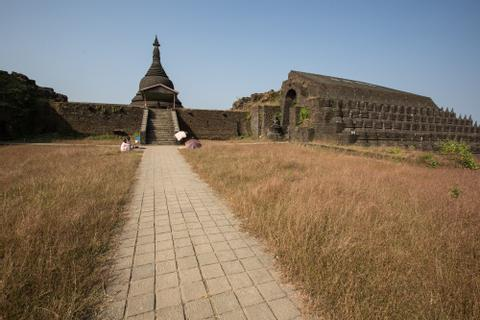

Koe Thaung Temple
Koethaung Pagoda. the name means 90.000 and probably signified the number of Buddha images it was supposed to
contain. To the north of the Pisei Hill at a distance of 400 yards is the Koethaung Pagoda. The pagoda stands on
a plain and is surrounded by paddy fields. The upper tiers of the pagoda had disappeared. The remaining lowest
tier is about 30 feet high including earth foundation. The King Mintaikkha who was the son of the King Minbin.
the donor of the great Shitthaung Pagoda. built the Koethaung Pagoda in 1553 A.D.
The pagoda is the biggest in size among the pagodas in Mrauk-U. It measures 230 feet from east to west and 250
feet from north to south. The Koethaung Pagoda is very similar to Shitthaung Pagoda. They are of the same type
from the historical and archaeological viewpoints. This tradition of donation of religious buildings by royal
families came down from the royal ancestors.

The pagoda was constructed of massive stonewalls and terraces. The small one hundred and eight pagodas. all made
of sandstone. were built on the terraces. The entrance to the pagoda on the east side leads to a long vaulted
passage which spirals round the tiers until it reaches the central chamber. The construction of the Koethaung
Pagoda resembles a rock cave tunnel. The main tower above the pagoda is octagonal in shape. It is believed that
there may be treasures of sculptures. artworks and even valuable jewelleries buried underneath the ruins. The
platform is scattered here and there with vestiges of pagodas. images and many other such paraphernalia.

The legend says that the pagoda was demolished and hit by a thunderbolt because the King Mintaikkha built the
Koethaung Pagoda (ninety thousand images). which exceeded in number to the images of his father. King Minbin's.
Shitthaung Pagoda (eighty thousand images). It was unlikely. Really. the Pagoda. Koethaung was built in six
months time by the advice of his astrologers. In building this pagoda. the workmen used both bricks and stones.
Other pagodas were mostly built of pure sandstone. which had been carried. from the Rakhine-coasts. The
six-month's time was not long enough to collect the required number of blocks of stone. As a consequence.
Koethaung was inferior in quality in materials as well as in workmanship compared to Shitthaung Pagoda.